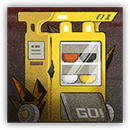
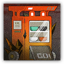

内测版自助出餐终端 Beta Food Delivery Terminal
近战 物理；精英 源石造物
|  |
罗德岛的食堂自助出餐终端测试机。为了免去从宿舍走到食堂的麻烦，某位分秒必争的干员灵光一现，特意给出餐终端接入了修理小助手。可惜这次测试的时机不对，本是图个方便却造成了更多的麻烦。 |
自助出餐终端丨Beta Food Delivery Terminal
大型构装（源石造物），无阵营
| AC 20 | 先攻 -1（9） |
| HP 76（8d10+32） | |
| 速度 20 尺 | |
| 调整 | 豁免 | 调整 | 豁免 | 调整 | 豁免 | |||||||||
|---|---|---|---|---|---|---|---|---|---|---|---|---|---|---|
| 力量 | 18 | +4 | +4 | 敏捷 | 8 | -1 | +2 | 体质 | 19 | +4 | +4 | |||
| 智力 | 7 | -2 | +1 | 感知 | 12 | +1 | +4 | 魅力 | 8 | -1 | -1 |
| 免疫 心灵，毒素；目盲，耳聋，魅惑，恐慌，力竭，麻痹，石化，中毒 |
| 感官 盲视10尺，被动察觉13 |
| 语言 无 |
| CR 5（XP 1,800；PB+3） |
特质 Traits
魔法抗性 Magic Resistence。自助出餐终端为抵抗法术和其它魔法效应而作的体质豁免检定具有优势。
动作 Actions
多重攻击 Multiattack。自助出餐终端发动两次顶撞攻击。其可以将其中一次攻击替换为执行配餐。
顶撞 Gore。近战攻击检定：+7，触及5尺。命中：15（2d10+4）钝击伤害。
配餐 Orders（3/日）。自助出餐终端在5尺内的空地召唤一个迷茫的修理小助手，与自己共享先攻并紧接自己之后行动。
自助出餐终端原型机 Food Delivery Terminal Prototype
近战 物理；精英 源石造物
|  |
罗德岛的食堂自助出餐终端原型机。为了免去从宿舍走到食堂的麻烦，某位分秒必争的干员灵光一现，特意接入了修理小助手。可惜大部分设计都用力过猛，本是图个方便却造成了更多的麻烦。 |
自助出餐终端原型机丨Food Delivery Terminal Prototype
大型构装（源石造物），无阵营
| AC 21 | 先攻 -1（9） |
| HP 95（10d10+40） | |
| 速度 20 尺 | |
| 调整 | 豁免 | 调整 | 豁免 | 调整 | 豁免 | |||||||||
|---|---|---|---|---|---|---|---|---|---|---|---|---|---|---|
| 力量 | 18 | +4 | +4 | 敏捷 | 8 | -1 | +2 | 体质 | 20 | +5 | +5 | |||
| 智力 | 7 | -2 | +1 | 感知 | 12 | +1 | +4 | 魅力 | 8 | -1 | -1 |
| 免疫 心灵，毒素；目盲，耳聋，魅惑，恐慌，力竭，麻痹，石化，中毒 |
| 感官 盲视10尺，被动察觉13 |
| 语言 无 |
| CR 7（XP 2,900；PB+3） |
特质 Traits
魔法抗性 Magic Resistence。自助出餐终端为抵抗法术和其它魔法效应而作的体质豁免检定具有优势。
动作 Actions
多重攻击 Multiattack。自助出餐终端发动两次顶撞攻击。其可以将其中一次攻击替换为执行配餐。
顶撞 Gore。近战攻击检定：+7，触及5尺。命中：20（3d10+4）钝击伤害。
配餐 Orders（3/日）。自助出餐终端在5尺内的空地召唤一个失控的修理小助手，与自己共享先攻并紧接自己之后行动。